Wind, and Geothermal Energy Converge in a Single Pavilion TCCGE Green Energy Vision Pavilion
CLIENT
TCCGE
LOCATION
Changhua, Taiwan
YEAR
2022–Present
CATEGORY
Curatorial Project, Exhibition Design, Interior Design, Installation Art, Interactive Multimedia, Construction
Taiwan Cement Green Energy Corporation was set up in 2018 as a wholly owned subsidiary of the Taiwan Cement Group, tasked with building out the group's renewable energy business across solar, wind, and geothermal investment and development. By the end of 2019 the company had finished a 12.1MW solar array and a 7.2MW wind farm at Changbin. Around that same time, we were brought in to turn an adjacent space at the site into a public-facing exhibition hall, the Green Energy Vision Hall, built around the guiding statement "The future is worth it" and structured as a journey from interior to rooftop, from the mechanical to the organic.
Life and Cement, Grown Together
At the center of the exhibition sits a welcoming installation measuring 235 to 270 centimeters, in which plant life grows directly out of a cement structure, giving physical form to the idea of life and cement bound up together. It works as more than an entrance piece: it anchors the whole hall conceptually, framing the question of how a cement manufacturer builds, from its existing industrial base, toward a lasting commitment to environment and life.
The design proposal drew on Walter Benjamin's observation that in the face of life we hold no answers, only questions and the stories told while confronting them. That set the tone for the whole hall, which unfolds through narrative rather than lecturing visitors on energy facts, leaving room for people to explore at their own pace.
Entrance Sequence
The visitor route opens with a ceremonial corridor where rotating projected imagery asks who we are, where we come from, and where we are going. Taiwan Cement's shift from a traditional cement business toward renewable energy is framed here as an ongoing attempt to resolve problems between people, and between people and their environment. The sequence keeps its information density low on purpose, favoring atmosphere and emotional tone so visitors already feel connected to the subject before they reach the main exhibition space.
Finding Energy in the Environment
The core exhibition follows the logic of finding energy within the environment, unfolding zone by zone. The Energy Discovery Zone pairs a touch-interactive whiteboard with documentary footage tracing the Changbin plant's history from construction onward, using contextual graphics and text to build an understanding of how energy exists in nature.
The Real-Time Power and Renewable Energy Learning Zone links to the live energy monitoring center on the second floor and adds touch-based graphic interpretation, introducing renewable types such as biomass, hydro, tidal, and wave power alongside how each is developing in different countries. In the Household Electricity and Power Transmission Zone, sensor-activated lighting compares how much power different appliances draw, while the space explains AC/DC conversion and smart grid distribution; Kinect gesture detection combined with AR turns the abstract idea of electricity into something visitors can physically try.
The Solar, Wind, and Geothermal Zone lays out physical samples, cutaway models, and tablet-based games that explain how each of the three technologies generates power, with games supporting both solo play and two-player competition. A holographic interactive display cabinet lets visitors trigger three-dimensional animations at the press of a button, covering application scenarios for solar, wind, and geothermal energy and giving concrete shape to the idea of a green energy home.
The route closes in the Future Outlook Zone, built around seed banking and the carbon cycle, circling back to the exhibition's central line: "The future is worth it."
Onto the Roof
The narrative doesn't stop indoors. We also developed the rooftop into an outdoor viewing platform, giving visitors a vantage point over Taiwan Cement's working renewable energy site along with a dedicated photo spot.
Materials
Interior scenic surfaces rely heavily on board-formed concrete paired with woodwork, held up by a hot-dip galvanized C-channel steel structure that frames the three-dimensional feature walls. Zone D adds mirror-finished stainless steel spheres and blackened iron lettering to reinforce the forward-looking visual language. Multimedia work spans commercial touchscreens, a 270-degree infrared-touch holographic projection system, Kinect sensing devices, and custom interactive software, tying hardware, software, and spatial design into one connected system rather than a row of separate exhibits.
What started as a single installation of cement and living plants at the entrance carries through to a breathing green landscape on the roof, and across that arc, the Green Energy Vision Hall reads less as an exhibition and more as an enterprise renewing its dialogue with the environment it operates in.
RELATED PROJECTS

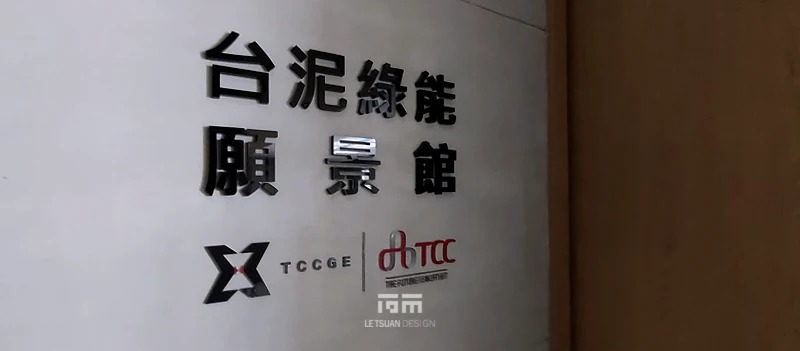
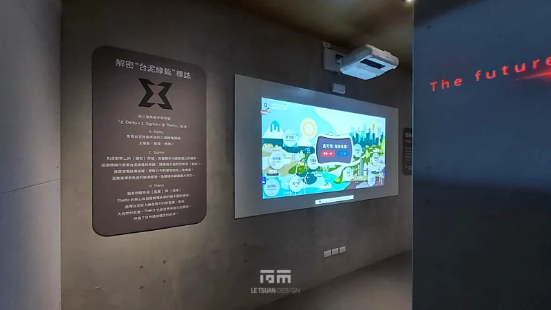
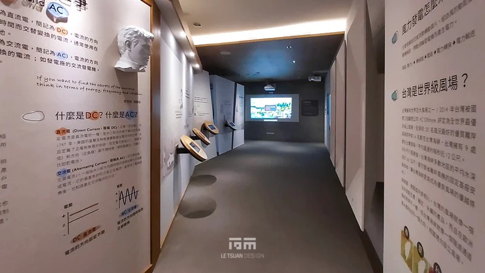
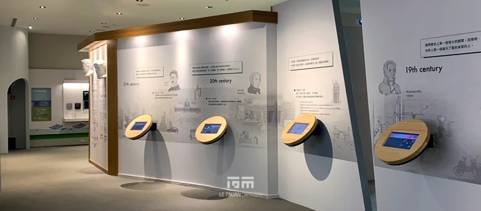
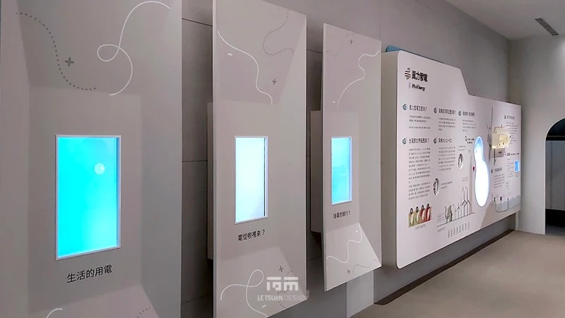
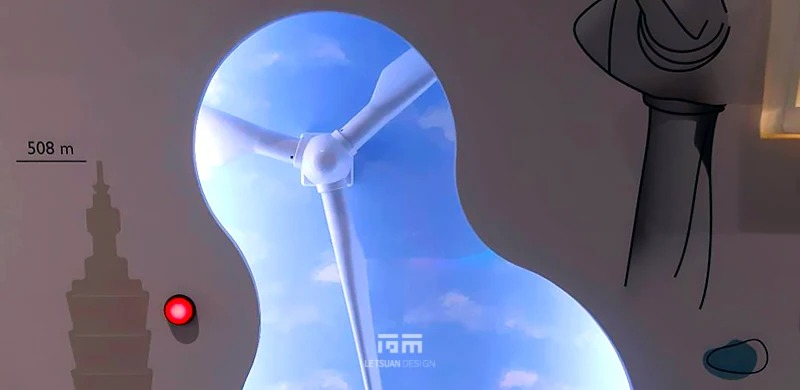
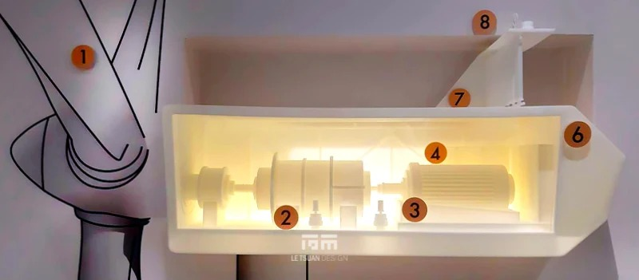
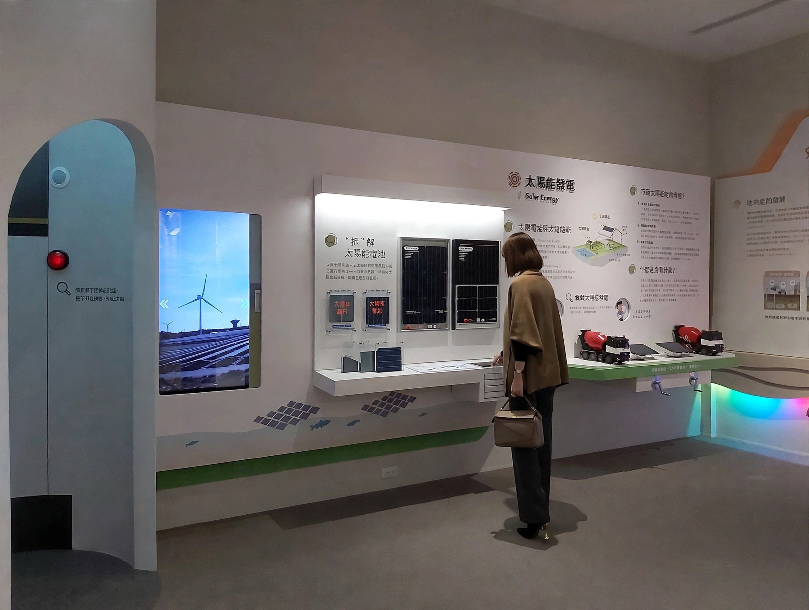
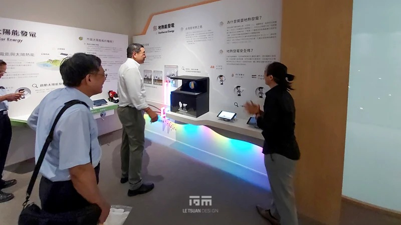
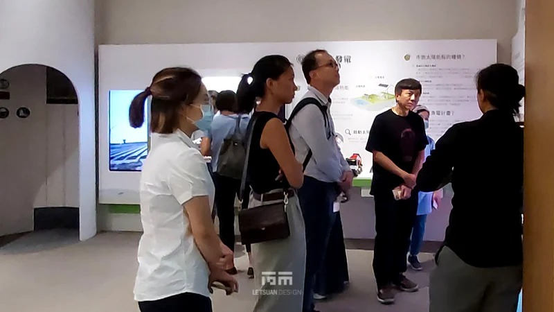
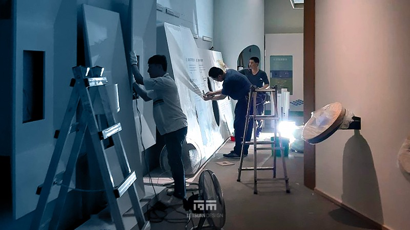